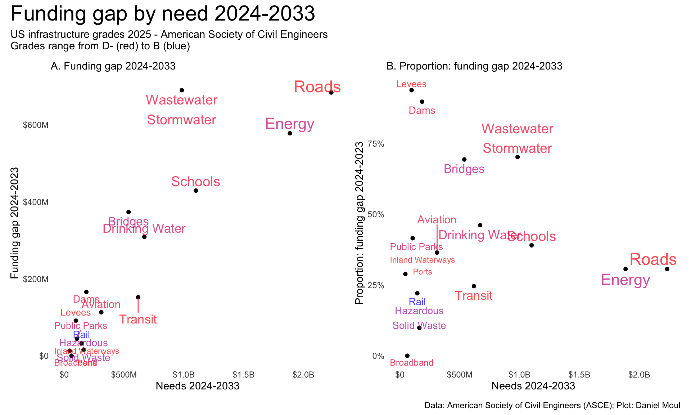

###### Infrastructure investment needsd_investment_needs_raw <-read_csv(here("data/raw/cumulative_investment_needs_2025.csv")) |>clean_names()names(d_investment_needs_raw) <-str_remove(names(d_investment_needs_raw),"_billion_usd")d_investment_needs <- d_investment_needs_raw |>mutate(prop_of_need_funded = funded_2024_33 / needs,prop_of_funded_gap = funding_gap_2024_33 / needs )# Dams and levees are the most underfunded in terms of multiple of current funding (gap / funding)###### Infrastructure report card gradesd_grades <-read_csv(here("data/raw/infrastructure_grades_2025.csv")) |>clean_names() |>rows_append(tribble(~category,~grade,"Hazardous & Solid Waste","C+/C+","Inland Waterways & Ports","D/B","Wastewater + Stormwater","D+/D" ))d_infra_combined <-right_join( d_grades, d_investment_needs,by =join_by(category == infrastructure_system)) |>filter(category !="TOTAL") |>mutate(idx =row_number()) |>relocate(idx) %>%mutate(rank_funding_gap =nrow(.) -rank(funding_gap_2024_33) +1,rank_spending =nrow(.) -rank(funded_2024_33) +1,rank_needs =nrow(.) -rank(needs) +1,rank_prop_of_need_funded =nrow(.) -rank(prop_of_need_funded) +1 )
Each year the American Society of Civil Engineers (ASCE) brings attention to our national infrastructure systems by grading them and summarizing projected funding levels and funding gaps1. From the 2025 summary:
There are more than 92,000 dams in the U.S. that generate electricity, supply drinking water, and protect communities and critical infrastructure. Nearly 17,000 of these dams are considered high hazard potential, meaning there is likelihood of deadly harm to residents and property in the case of a dam failure. The cost of maintaining, upgrading, and repairing these structures has increased significantly since the beginning of the 21st century because of an increase in extreme weather events, growing populations downstream, and the outdated design challenges of aging structures. The average age of our nation’s dams is over 60 years, while 7 of 10 dams nationwide are expected to reach 50 years by 2025. The Infrastructure Investment and Jobs Act (IIJA) provided approximately $3 billion to improve dam safety, although Congress redirected $364 million of that funding for other purposes. Furthermore, federal dam safety programs continue to receive annual appropriations below their authorized funding levels. Despite these challenges, IIJA funding, combined with other Congressional actions, provided a needed boost to overall dam safety and rehabilitation. However, without a more significant commitment to dam safety through increased annual investment in inspection, monitoring, planning, and necessary dam repairs, the cost to bring the nation’s dams into a state of good repair will continue to rise and downstream communities will face a greater risk of danger from potential dam failure.
The 2025 report2 includes projections for the ten years 2024-2033 for dams and other kinds of infrastructure. Dams are graded “D+” and as a category are second only to levees in the smallest portion of the need being funded (Figure 4.2 panel B).
Show the code
dta_for_table <- d_infra_combined |>arrange(idx) |># adorn_totals(where = "row") |># select(-idx) |>rename(`funded 2024_22`= funded_2024_33, `funding gap 2024_33`= funding_gap_2024_33,`prop of need funded`= prop_of_need_funded,`prop of funded gap`= prop_of_funded_gap,`rank funding gap`= rank_funding_gap,`rank spending`= rank_spending,`rank needs`= rank_needs,`rank prop of need funded`= rank_prop_of_need_funded, )dta_for_table |>gt() |>tab_options(table.font.size =10) |>tab_header(md(glue("**US Infrastructure 2025 grades, and projections of<br>10-year funding and 10-year funding gaps**","<br>*Amounts in billions of dollars. Click column headers to sort*"))) |>tab_source_note(md(glue("*Source: A Comprehensive Assessment of America’s Infrastructure:"," 2025 report card for America's infrastructure*. ASCE. 2025. Table: Daniel Moul."))) |>cols_width( idx ~px(50), category ~px(90), grade ~px(50), needs ~px(50),`funded 2024_22`~px(65),`funding gap 2024_33`~px(65),`prop of need funded`~px(65),`prop of funded gap`~px(65),`rank funding gap`~px(65),`rank spending`~px(65),`rank needs`~px(65),`rank prop of need funded`~px(65), ) |>fmt_number(columns =starts_with("prop"),decimals =2) |>tab_style(style =list(cell_fill(color ="lightyellow") #"lightblue") ),locations =cells_body(rows = category =="Dams" ) ) |>opt_interactive(use_pagination =FALSE )
US Infrastructure 2025 grades, and projections of 10-year funding and 10-year funding gaps Amounts in billions of dollars. Click column headers to sort
Source: A Comprehensive Assessment of America’s Infrastructure: 2025 report card for America’s infrastructure. ASCE. 2025. Table: Daniel Moul.
Table 4.1: ASCE infrastructure grades and funding projections
Roads have a similar grade (“D”) and have a projected spending need 12 times and projected gap four times that for dams (Figure 4.1). Note that ports have a higher grade than inland waterways, but the ASCE doesn’t publish separate funding estimates).
Figure 4.1: ASCE infrastructure grades and funding projections
Plotting projected funding gap by projected need (Figure 4.2), roads and energy emerge as the biggest holes. Dams are almost lost in the small noise–thought I’m sure that isn’t how people living downstream of dams with high hazards see it (Chapter 3 Risks).
Show the code
p1 <- dta_for_plot |>ggplot() +geom_point(aes(needs, `funding gap 2024_33`)) +geom_text_repel(aes(needs, `funding gap 2024_33`, label = category, size = needs, color = grade_num),direction ="y",hjust =0.5, alpha =0.7,show.legend =FALSE) +scale_x_continuous(labels =label_number(scale =1e6,scale_cut =cut_short_scale(),prefix ="$")) +scale_y_continuous(labels =label_number(scale =1e6,scale_cut =cut_short_scale(),prefix ="$")) +scale_size_continuous(range =c(3, 6)) +scale_color_gradient(low ="red",high ="blue") +expand_limits(x =0, y =0) +labs(subtitle ="A. Funding gap 2024-2033",x ="Needs 2024-2033",y ="Funding gap 2024-2023" )p2 <- dta_for_plot |>ggplot() +geom_point(aes(needs, `prop of funded gap`)) +geom_text_repel(aes(needs, `prop of funded gap`, label = category, size = needs, color = grade_num),direction ="y",hjust =0.5, alpha =0.7,show.legend =FALSE) +scale_x_continuous(labels =label_number(scale =1e6,scale_cut =cut_short_scale(),prefix ="$")) +scale_y_continuous(labels =label_percent()) +scale_size_continuous(range =c(3, 6)) +scale_color_gradient(low ="red",high ="blue") +expand_limits(x =0, y =0) +labs(subtitle ="B. Proportion: funding gap 2024-2033",x ="Needs 2024-2033",y ="Proportion: funding gap 2024-2023" )p1 + p2 +plot_annotation(title ="Funding gap by need 2024-2033",subtitle =glue("US infrastructure grades 2025 - American Society of Civil Engineers","\nGrades range from D- (red) to B (blue)"),caption = my_caption_asce )

Figure 4.2: ASCE infrastructure grades and funding projections